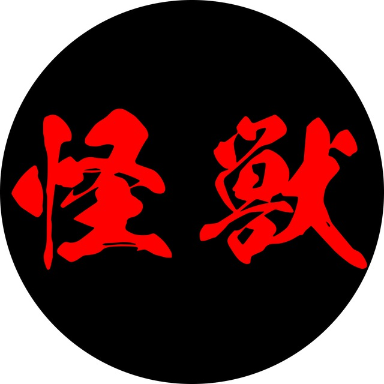

Вы играете душу, проживающую несколько жизней. Вы умрёте и переродитесь. Это игра, где герои и боги соперничают за то, каким будет новый мир. Боги формируют судьбы мира из осколков душ. Души сопротивляются и ищут свой путь. Боги лепят героев из душ, герои меняют богов и вместе с ними мир.
Гибридная игра: На игре будет до 40 игроков на полигоне и до 20 игроков онлайн (боги и духи). Связь через видеокамеры (в особых местах) и голоса духов в наушниках (у всех игроков на полигоне).
Дата и Место: 1 — 3 мая 2026, Сербия.
Команда OMG: Lance, Lenoran, Тор Страхов, Дейдра, Инуки, Чихе, Яна Позднякова.
Деревня Нидомура расположена у врат мёртвых — одного из входов в Дзигоку. Среди духов и знающих людей она известна как «место, где хоронят великие души». Эти врата рядом с префектурой Мёкан. Здесь не сеют рис и не ловят рыбу — здесь по всем правилам хоронят мёртвых. По крайней мере так задумано, ведь сюда свозят особые случаи смерти со всей Японии: клятвопреступников, неправедно казнённых, подменышей, проклятых. Но так же и подвижников, героев, великих правителей — всех неупокоенных, чья смерть требует расследования мёкан, прежде чем двигаться дальше.
Можно играть и великого героя и обычного крестьянина, но не жизнь в обычной деревне: мы играем про необычные и великие души, которые проходят череду рождений. Каждая жизнь — это этап в становлении души. Каждая смерть — подведение итогов этого этапа. Каждая душа пройдет через перерождение и воплотится в новое тело, со старыми кармическими долгами и новой судьбой.
Когда вы умираете, вы проходите многоэтапный процесс похорон. Похороны для души — это осознание жизни. Монахи задают вам вопросы через сутры. Могильщики копают вашу могилу, и вы видите, как глубока яма. Резчик спрашивает: какие слова вырезать на камне?
Вы осознаёте свою жизнь. Вы прощаетесь с прошлым. Вы понимаете, кем стали. Это ваша работа как духа.
Здесь не хоронят простые случаи. Каждый кого здесь похоронят попадет на суд мекан. Но в этой деревне умеют повлиять на то, что будет за вратами смерти. Для этого нужно успеть разобраться с ее земными делами и раздать кармические долги. Или подделать мандаты, документы и обстоятельства, так чтоб судейские не нашли концов. В общем — каждый здесь пытается закончить дела (свои или предков), отдать долги, уйти на тот свет не с пустыми руками.
Пока вы живы (или застряли между смертями), вы участвуете в борьбе кланов. Якудза торгуют обрядами. Контрабандисты подделывают печати смерти, переписывая судьбы. Следователи раскрывают преступления. Чиновники принимают постановления.
Это попытка взломать игру богов. Боги формируют судьбы из осколков душ — но вы крадёте осколки, подделываете их, торгуете ими. Все для того, чтобы в следующей жизни получить нужную вам (или тем для кого стараетесь) судьбу. И при этом, конкурируете с другими сторон за влияние на сюжет мира.
В ключевые моменты герои выходят на сцену перед богами. Каждый кто выйдет на сцену получит полное внимание богов и смертных. Кабуки — это острый, но регламентированный ритуалом, конфликт где стороны требуют друг от друга невозможного. Его результаты меняют судьбу героев. И глядя на их игру боги устанавливают новые правила мира.
В конфликте на сцене стороны требуют друг у друга невозможного — того, что можно отдать лишь ценой огромной утраты. Но и победа и поражение неизбежно изменят путь героя.
Душа каждого расколота на три пути: путь долга, путь страха, и путь голода. Один осколок у вашего персонажа. Остальные — в руках других игроков: богов и смертных. Держатель осколка управляет частью чужой души. Его требования обязательны — но их можно выполнить по-своему, сопротивляясь в рамках правил.
Так устроена сансара: каждый вращает колесо страданий другого.
Стать собой, найти свой путь — сопротивляясь закону небес или используя игру богов. Вы выигрываете, когда трансформация вашей души повлияла на мир. Не важно, согласились вы с богами или восстали против них. Важно, что ваша душа прошла путь и изменили себя и реальность.
Воспитать героя, из которого родится новый мир. Но герои не пешки — они соперники и союзники. Вы предлагаете судьбы, они импровизируют. Вы осознаёте себя, глядя на их выборы. Вы меняетесь под их взглядами. Вы выигрываете, если из судьбы героя родился ваш мир — но герой должен сам пройти свой путь.
Референсы: Мрачный минимализм Куросавы («Расёмон», «Семь самураев»). Акутагава. Достоверная бюрократия духов в мифической Японии. «Невидимый монах» — детектив про коллизии небесной бюрократии в маленькой деревне.
Чувства: Драма невозможного выбора. Ярость против судьбы. Тяжесть кармического долга. Озарение от осознания пути. Отчаяние перед голодной смертью близких и нежность заботы о них. Гордость за то, что можешь прокормить семью. Ужас потери статуса и торжество обретения положения. Паника перед разоблачением и триумф успешного обмана.
Типичная сцена: Три человека у тела. Каждый помнит случившееся по-своему — разбойник видит ярость, самурай честь, жена самурая страх. Все лгут. Все правы. Каждый защищает свою версию. Мир каждого рушится под весом правды.
Серьёзная драма с сильным уклоном в трагедию. Мрачно, но с проблесками надежды.
О чём: Трансформация через смерть. Сопротивление судьбе vs принятие её. Как смертные и боги формируют друг друга.
Смерть: Вы играете не за отдельное воплощение, а за всю историю души, в нескольких рождениях. Вы живете, умираете, проходите мистерию похорон, перерождаетесь. Так крутится колесо сансары.
PvP: Через осколки душ и интриги между кланами. Без физического насилия. Это торг влиянием, не боевка.
Герои vs Боги: Боги предлагают судьбы, герои живут следуя им или сопротивляясь. Герои показывают идут своим путем, а боги ищут в деяниях смертных способ изменить законы мира.
Потеря агентности: Другие игроки (и боги) держат осколки вашей души и предлагают вам сюжеты. Вы можете согласиться или сопротивляться. Это не лишение прав — это игра влияния.
Это не игра о том, чтобы победить зло или спасти мир.
Это игра о том, как герои и боги формируют друг друга.
Вы умрёте. Боги предложат судьбу. Но вы можете восстать, принять или найти третий путь. К концу станет ясно: какой мир родился из этого противостояния? Кто кого изменил сильнее?
Наша политическая реальность = реальность фильма «Ран» Куросавы, не исторической Японии.
- Был правитель, свергнут своими сыновьями
- Страна в гражданской войне
- Три наследника: долга, страха, голода
Уровни реальности
- Реальность богов (онлайн)
- Реальность маленькой деревни (полигон)
- Реальность всей остальной страны (фон, новости)
Связь уровней. Когда боги что-то решают — это отражается на всей стране.
Пример: есть юрей Кикутё (самый шумный самурай из «Семи самураев», который у нас не выжил). Он неупокоен, потому что бился за деревню, а деревня не даёт ему имени и не хранит его толком:
- Одним важно доказать, что он крестьянин — «чтобы устои не пали»
- Другим важно доказать, что он самурай — «это лучше для их партии»
- Третьим важно что «важно не кем рождён, а кем жил»
Предположим побеждает партия «он крестьянин». В деревню приходят новости: в войске наследника страха прошли чистки. Самураи должны были проявлять грамоту — те, кто проявил, пошли прогуляться.
Боги берут драматические события деревни, играют в них, результат показывается игрокам в виде новостей из большого мира, которые приходят в деревню.
Источники: Куросава («Расёмон», «Семь самураев», «Ран»). Рассказ «Невидимый Монах» Алексея Кулакова.